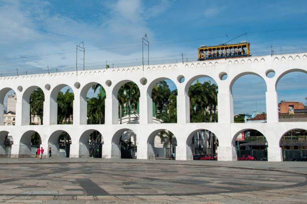

Arcos da Lapa

Os Arcos da Lapa localizam-se na região da Lapa, no bairro da Lapa, na Zona Central do município do Rio de Janeiro, no Brasil.
Como chegar?
O método mais fácil é através das linhas do metrô, sendo a Cinelândia a 8min de caminhada e a Carioca a 10min de caminhada.